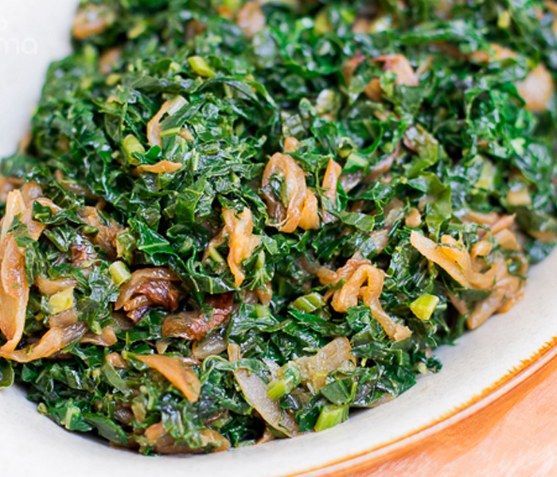

HOME
SUKUMA WIKI RECIPE

INGREDIENTS
- 1 bunch sukuma wiki (collard greens) leaves
- 2 medium-sized red tomatoes
- ½ small onion
- ¼ cup olive oil
- salt to taste
PREPARATION TIME
- PREP TIME 5minutes mins
- COOK TIME 5minutes mins
- TOTAL TIME 10minutes mins
INSTRUCTIONS
Wash the collard greens then use a knife to chop off the stems. You
can also use your hands to separate the leaves from the stems.
Discard the stems (you only require the leaves). Grab a bunch of
leaves with your hand, roll them up together then hold them firmly
on top of a chopping board. Use a knife to chop or slice into
ribbons. The cutting size will depend on your preference.
Wash the tomatoes, peel and slice the onion and chop the tomatoes.
Next, heat your cooking pot on the stovetop set it to heat under
medium heat. Next, add in the olive oil and allow it to heat for
about 1-2 minutes.
Fry the onion until golden brown. Next, add the tomatoes and allow
them to cook. The tomatoes should be totally soft. You can add a
tablespoon or two of oil, if the tomatoes are sticking to the pot.
Once the tomatoes are totally cooked through, add the sukuma wiki
leaves and some salt. Cover and allow it to reduce for about one
minute then stir. Cover again and allow to cook for a further 5
minutes. You can cook it longer, if you do not like your vegetables
crunchy.
Season with more salt or some pepper (if preffered).
Remove from the heat and serve with ugali. For a low carb or paleo
option, serve sukuma wiki with low carb fufu.